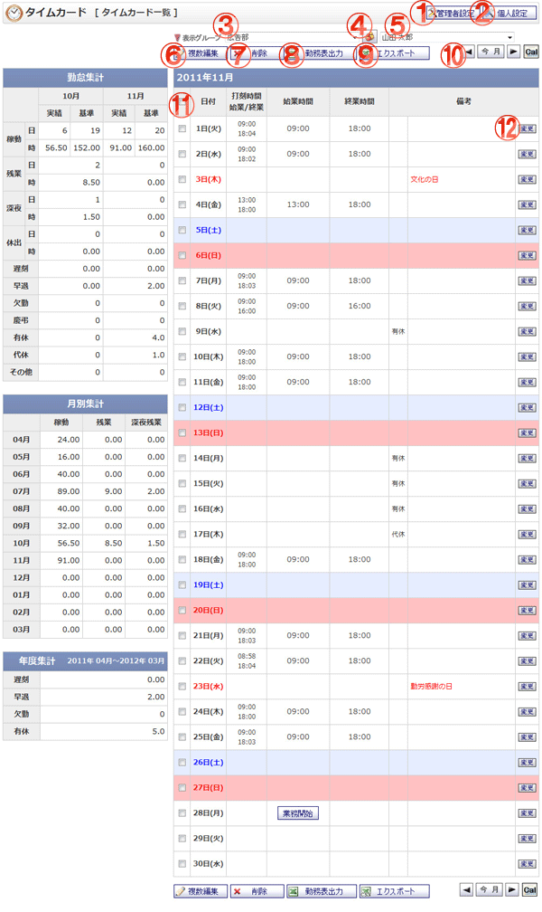

打刻状況をタイムカードカレンダーとして一覧表示する画面です。

機能説明
管理者設定ボタン管理者設定画面へ遷移します。 |
個人設定ボタン個人設定画面へ遷移します。 |
|---|---|
グループコンボ選択したグループに所属するユーザがユーザコンボに表示されます。 |
グループボタンポップアップでグループ選択画面が開きます。 |
ユーザコンボ選択したユーザのタイムカード情報が表示されます。 |
複数編集ボタンタイムカード編集画面へ遷移します。一覧でチェックを付けた日付のタイムカードを一括で編集できます。 |
削除ボタン削除確認画面へ遷移します。一覧でチェックを付けた日付のタイムカードを削除します。 |
勤務表出力ボタン勤務表をXLS形式のファイルでダウンロードします。 |
エクスポートボタンタイムカード情報をCSV形式のファイルでダウンロードします。 |
今月ボタン・前月移動ボタン・翌月移動ボタン今月ボタンで今月へ、前月移動ボタンで前月へ、翌月移動ボタンで翌月へそれぞれ遷移します。 |
ヘッダチェックボックスチェックをつけると、全てのチェックボックスにチェックが付きます。チェックを外すと、全てのチェックボックスのチェックが外れます。 |
変更ボタンタイムカード編集画面へ遷移します。 |